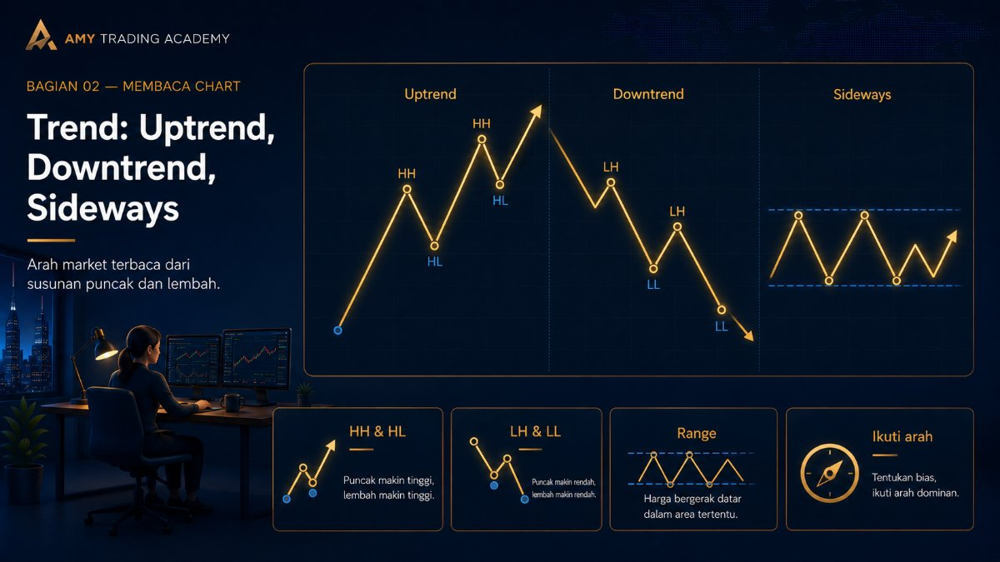
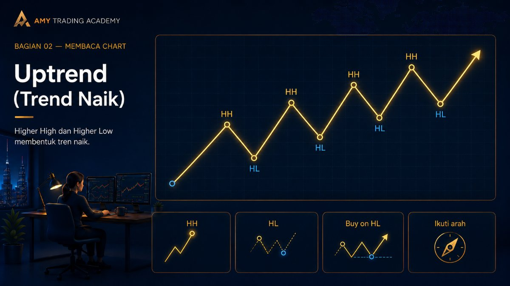
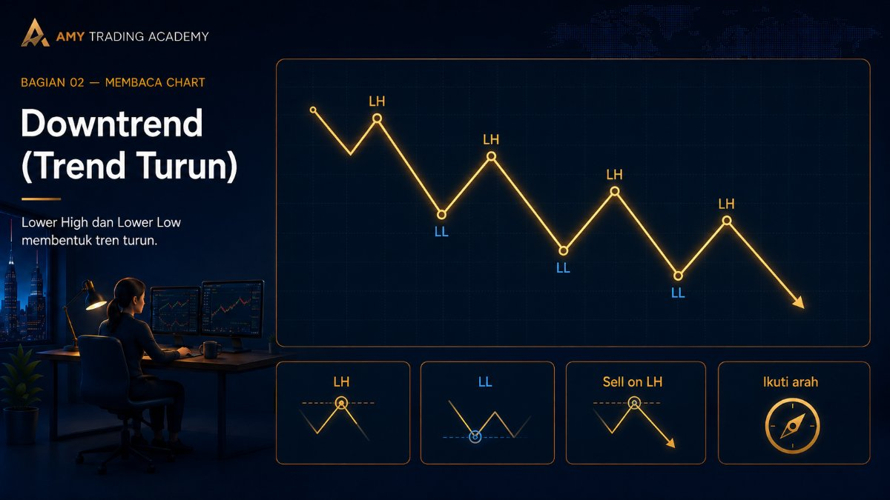
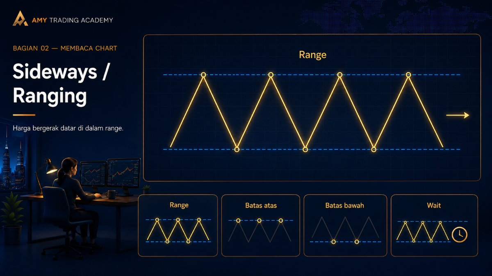
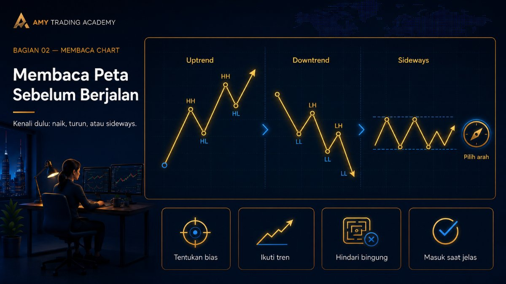

Trend: Uptrend, Downtrend, Sideways

Ada pepatah paling legendaris di dunia trading yang berbunyi: "Trend is your friend until it bends" (Trend adalah temanmu sampai dia berbelok). Pepatah ini bukan cuma kata-kata bijak, tapi hukum alam di market. Melawan trend sama konyolnya dengan berenang melawan arus sungai yang deras; kamu hanya akan buang-buang tenaga dan akhirnya tenggelam.
Di bab sebelumnya, kita sudah belajar cara menemukan "pos istirahat" yaitu Swing High (Puncak) dan Swing Low (Lembah). Nah, arah pergerakan (Trend) sebenarnya hanyalah susunan berkelanjutan dari rangkaian puncak dan lembah tersebut. Ada tiga jenis kondisi jalan di market:
1. Uptrend (Trend Naik)

Sebuah pasar dikatakan sedang Uptrend jika ia membentuk tangga yang menanjak ke atas. Syarat sah sebuah Uptrend adalah munculnya formasi:
- Higher High (HH): Puncak yang baru selalu lebih tinggi dari puncak yang lama.
- Higher Low (HL): Lembah yang baru juga selalu lebih tinggi dari lembah yang lama.
Bayangkan kamu sedang naik tangga. Kakimu melangkah dari anak tangga bawah (Low), naik ke pijakan atas (High). Lalu kamu mengangkat kakimu sedikit (Higher Low), untuk menginjak anak tangga yang lebih tinggi lagi (Higher High). Begitu seterusnya.
Strategi di Uptrend: Karena arus sedang naik, kita HANYA mencari peluang untuk BUY. Kapan belinya? Jangan beli di ujung puncak (HH), tapi belilah saat harga sedang "mundur mengambil napas" membentuk lembah baru (HL).
2. Downtrend (Trend Turun)

Kebalikannya, sebuah pasar dikatakan sedang Downtrend jika ia membentuk tangga yang menurun ke bawah. Syarat sah Downtrend adalah formasi:
- Lower Low (LL): Lembah yang baru selalu lebih dalam/rendah dari lembah yang lama.
- Lower High (LH): Puncak yang baru tidak pernah bisa melewati puncak lama, malah semakin turun.
Seperti orang yang sedang turun tangga darurat. Pijakanmu selalu berpindah dari atas ke tempat yang lebih rendah, terus menerus menuju lantai dasar.
Strategi di Downtrend: Karena arus sedang turun, kita HANYA mencari peluang untuk SELL. Sama seperti tadi, jangan sell saat harga sudah mentok di bawah (LL), tapi sell-lah saat harga sedang memantul naik sedikit untuk mengambil napas (LH).
3. Sideways / Ranging (Pasar Datar)

Sayangnya, market tidak selamanya bergerak lurus ke atas atau ke bawah. Faktanya, 70% waktu market dihabiskan untuk bergerak ke samping alias Sideways.
Sebuah pasar dikatakan Sideways jika rangkaian Swing High dan Swing Low-nya berantakan, atau nyaris sejajar satu sama lain. Puncak baru gagal menembus puncak lama, dan lembah baru juga gagal menembus lembah lama. Harga hanya memantul seperti bola ping-pong di dalam satu kotak imajiner yang sama (Range).
Kamu sedang berada di jalan tol, tapi tiba-tiba terjadi kemacetan parah akibat kecelakaan. Mobilmu cuma bisa maju lima meter, lalu ngerem, mundur sedikit, lalu nunggu lagi. Kamu terjebak dan tidak ada kemajuan (progress) arah yang jelas.
Strategi di Sideways: Untuk pemula, aturan utamanya adalah JANGAN TRADING! (Wait and See). Duduk manis, simpan uangmu, dan tunggu sampai "kemacetan" itu selesai, yaitu ketika harga akhirnya menjebol kotak tersebut dan kembali membuat tren baru. Trader profesional mungkin bisa main ping-pong (Buy di batas bawah, Sell di batas atas), tapi itu sangat berisiko bagi yang belum terbiasa.
Membaca Peta Sebelum Berjalan

Sekarang kamu punya alat untuk membaca "peta jalan" di chart. Langkah pertama sebelum kamu masuk ke market adalah bertanya pada dirimu sendiri: "Kita lagi ada di jalan yang mana nih? Tangga naik, tangga turun, atau lagi macet-macetan di kotak?"
Kalau kamu sudah tahu jawabannya, setengah dari pekerjaanmu sebagai trader sudah selesai. Kamu hanya tinggal mencari di mana batas dinding dari pergerakan tersebut, yang akan kita pelajari di materi selanjutnya yaitu Support dan Resistance.